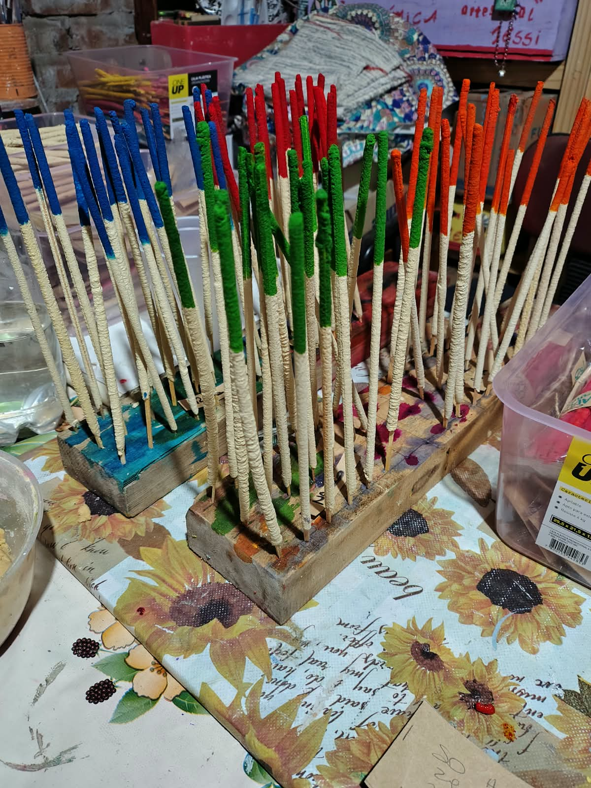
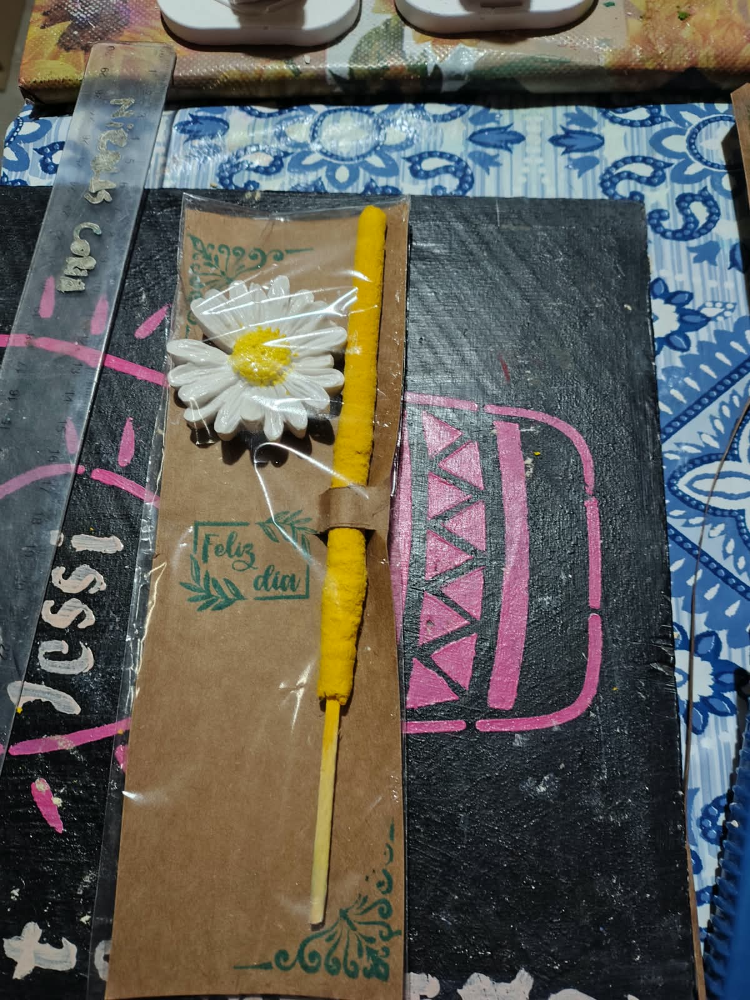
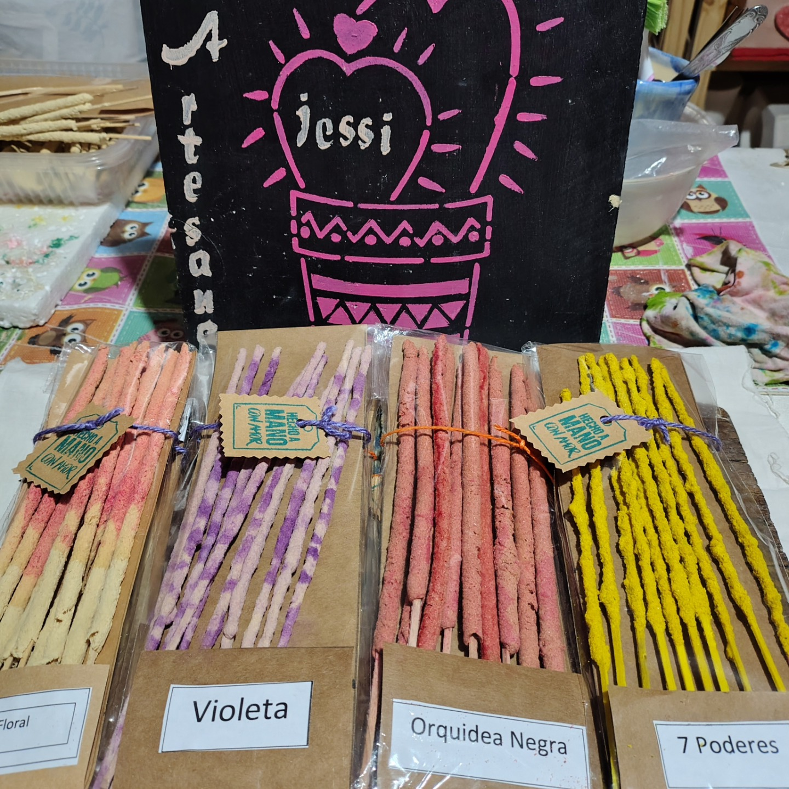

COLECCIÓN
Sahumerios Artesanales
Sahumerios Artesanales hecho a mano.

Sahumerio Artesanal 1
Transforma tu espacio en un refugio de paz. 🧘✨ Enciende un sahumerio, respira profundo y deja que el aroma limpie tu energía.

Sahumerio Artesanal 2
Buenas vibras y aromas que inspiran. 🌿 El toque perfecto para concentrarte, meditar o simplemente disfrutar de tu momento del día.

Sahumerio Artesanal 3
Desconecta del ruido exterior. 🕊️ Hechos para calmar la mente y armonizar cada rincón de tu hogar.